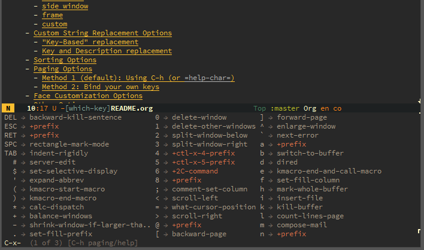

Spacemacs: best Rails IDE you've ever seen
Daniel Luna
Created: 2016-06-13 Mon 20:58
Spacemacs - an introduction
What is Emacs?
- Text editor
- Swiss army knife
- Best Git client I've ever worked with
- "Last Lisp Machine"
What is Spacemacs?
First things first
Really, what is Spacemacs?
From their Github page:
Spacemacs is a new way to experience Emacs – a sophisticated and polished set-up focused on ergonomics, mnemonics and consistency.
Just clone it, launch it, then press the space bar to explore the interactive list of carefully-chosen key bindings. You can also press the home buffer's [?] button for some great first key bindings to try.
Spacemacs can be used naturally by both Emacs and Vim users – you can even mix the two editing styles. Switching easily between input styles makes Spacemacs a great tool for pair-programming.
Why should I care?
It comes with a lot of integrated goodies to help with development.
"Help" is a misnomer here - most modes are on par with so-called "professional" tools, and for less mainstream languages, it's actually the best development environment.
It can be used by both Vim and Emacs users - so if you think Emacs "is a good OS, just lacking a decent editor", think again.
so Vim
Ubiquitous hjkl movement
No need to move your fingers out of the home row - hjkl Just Works™
Not only that, but almost all Vim commands work as expected.
Emacs keybindings' are setup per-mode, so to make it work seamlessly across all modes (even very customized ones, such as Org-mode and Magit) is harder than it looks.
Vim "language" works, and is extensible
- Verbs (a, i, o, y, p, c, d, >, <)
- Movement keys (f, t, /, ?, *, #, %)
- Bonus: you can define your own, if you know enough Emacs Lisp (even the "original" operators are defined like this)
Ex commands
Some cookbook examples:
- s/hello/world
- g/cookbook/d
- 4,15t$
g/test/m0
Registers
They basically work as expected. The verb is " (double quote). Some examples to illustrate:
- "ay$ (overwrite register 'r' with contents from point to the end of the line)
- "A2dd (append to register 'a' the contents of the next two lines and delete them)
- qb <some commands here> (see next section…)
Keyboard macros
The 'q' verb is used for saving keyboard macros.
- Can be saved to registers
- Can be edited ("C-x C-k e")

Leader keys
- Universal leader key (SPC)
- Mode-specific leader key (,)
Ergonomics
Summary:
- Vim keybindings everywhere
- Every command is triggered with at most 3 keystrokes.
- Emacs = "Escape Meta Alt Control Shift"? Not anymore.
much discoverability
Which-key
Which-key displays the key bindings following your currently entered incomplete command (a prefix) in a popup.

Help screens
Integrated help screens for every command
Integrated man pages (woman)
Apropos for commands
Various 'describe' commands
Helpful community
- Github
- Gitter chat
- Quality documentation
- Blog posts
much layers (IDE-style features)
What is a layer?
Layers help collect related packages together to provide features. For example, the python layer provides auto-completion, syntax checking, and repl support for python files. This approach helps keep configuration organized and reduces overhead for the user by keeping them from having to think about what packages to install
In other words: preconfigured goodies for your favorite language.
Auto-completion
Two backends for this: company and auto-complete. Both are good on their own right.

- Most modes have no Intellisense!
- Some languages (such as Ruby and Python) implement it
Syntax checking
Flycheck, Emacs' flexible backend for almost every syntax-checking tool.
Basically anything that can output an Emacs-style "backtrace" can be hooked into it.
Code snippets!
Yasnippet, Emacs' backend for code snippets, actually accepts Sublime Text snippets.
It also accepts inline Lisp code (so you can make decisions about how to expand a snippet based on the state of your editor - how cool is that?)
REPL support
- Run a REPL inside the editor
- Run commands while editing the file
- REPLs get Vim-style keybindings for free
Obligatory REPL screenshot
Terminals
Emacs has its own terminal emulator. Actually, it has (at least) 3. Only the ones in the shell layer will be shown here.
multi-term
- Runs your favourite shell inside Emacs
- Works as a normal terminal emulator, with a few caveats
- PAGER being the most annoying one
- Multi-term because it allows one to easily switch between multiple instances
eshell
- Implemented in pure ELisp (not just an interface to a system shell)
- Implements its own Lisp-ish versions of GNU userspace
- Works seamlessly through ssh
- Also works as an ELisp REPL (there is M-x ielm, though)
Hope you remember this movie…
(The story about how this happened is here)
MELPA
From their website:
Up-to-date packages built on our servers from upstream source
Installable in any Emacs with 'package.el' - no local version-control tools needed
Curated - no obsolete, renamed, forked or randomly hacked packages
Comprehensive - more packages than any other archive
Automatic updates - new commits result in new packages
Extensible - contribute recipes via github, and we'll build the packages
Yeah, Emacs has its own apt-get/yum/emerge/whatever.
very Git
It's Magit!
Thanks to Magit, Spacemacs has one of the best Git clients available.
Benefits:
- Comprehensive status buffer
- Most commands are 2-3 keystrokes away
Discoverable interface
It makes git look easy…almost.
- git-link
- git-timemachine
Status buffer
Log
Rebase
Discoverable

Diff
Inline diff!
git-timemachine
Step through historic versions of git controlled file using everyone's favourite editor
fun fact
wow